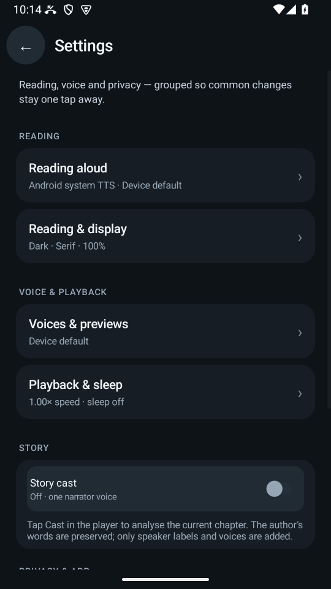
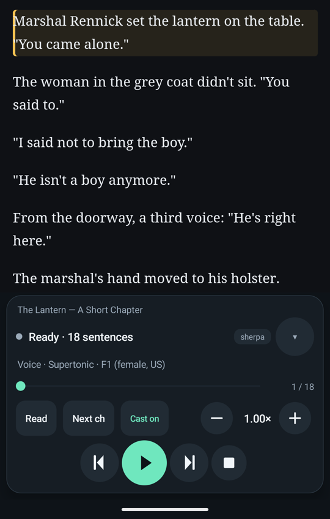
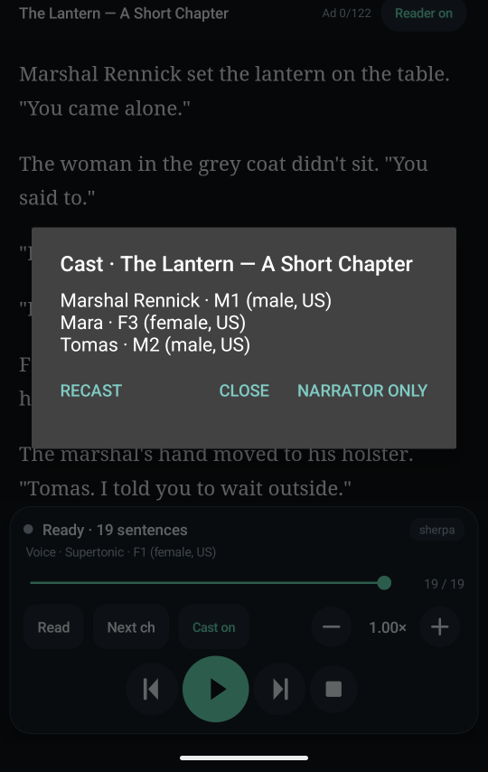

Features · Android 7.0+
What it does, in detail.
Every feature here is in the app today. The last section is what it does not do.
The chapter, not the chrome.
The browser takes any HTTPS URL, and the shortcut grid opens six sites that serialise chapters. Readability extracts the article; when a site's markup defeats it, a text-density pass takes over. Navigation, ad slots and cookie strips stay out of the queue.
Reader mode is per site, so one stubborn site does not change the others. The next chapter is found from the page's own next link and extracted in a hidden view. Auto mode opens it, waits 2.5 s and continues; it is off by default.
- Extraction
- Readability, then a text-density fallback
- Shortcuts
- Royal Road, Scribble Hub, WebNovel, Wattpad, Project Gutenberg, Wikipedia
- Reader mode
- Per site
- Next chapter
- From the page's own link, prefetched in a hidden view
- Paywalls
- Detected and named. Never bypassed, never read aloud

Two engines, four neural voices.
Android's system voice is instant, offline, and available in every language the device already ships. The neural path is sherpa-onnx on the phone: Supertonic 3, Kokoro, Pocket TTS and ZipVoice, each downloaded once and verified.
Sentences are pre-split and the next one or two are synthesised while the current one plays; up to about 12 s of audio is buffered ahead. Before neural synthesis, text is normalised for the model — quote glyphs, asterisks, ellipses and dashes — without touching the words. A saturated or garbage chunk is dropped instead of played, and vocoder hiss is suppressed.
- System voice
- 0 MB, every language the device supports
- Neural models
- 98–156 MB, SHA-256 verified, download on request
- Look-ahead
- About 12 s of audio buffered ahead
- Previews
- Audition a voice without disturbing the active engine

A player that survives the pocket.
A foreground service, a wake lock and a media session keep playback alive with the screen off. Wired and Bluetooth buttons work with both engines because system TTS is rendered to PCM and played in-process, so Android routes media keys to NovelSpeak.
Speed, pitch, volume boost and skip-silence sit one tap from the player. The card collapses to a 56 dp mini bar when the page needs the space.
- Screen off
- Foreground service and wake lock
- Headset buttons
- Play, pause, next, previous
- Sleep timer
- Minutes, or end of chapter
- Skip silence
- On request
- Mini player
- 56 dp when the page needs the space

A library that remembers the page.
Reading position is kept per chapter and per imported book. Search, filters for chapters, imports and finished books, and a two-column grid from 600 dp. Bookmarks save the sentence, not just the page, and reading statistics count time listened, sentences and active days.
EPUB, PDF with a text layer, and plain text import into app-private storage. A scanned PDF without a text layer is not read: there is no OCR.
- Storage
- Local, app-private. No account, no sync
- Imports
- EPUB, PDF (text layer), plain text
- Bookmarks
- Saved sentences with snippets
- Tablet
- Two-column library, two-pane reader
Story cast, with the caveats attached.
The narrator and each character can take different on-device voices. Analysis runs locally and preserves the author's text; it only adds speaker labels and voice ids. Supertonic exposes ten speakers in one model, so a cast does not download a model per character.
Lines the parser cannot resolve stay with the narrator and are counted as to review. It requires Supertonic or Kokoro; system TTS, Pocket and ZipVoice fall back to a narrator-only queue. This is the most experimental feature in the app, and the numbers below are the project's own, not a marketing figure.
- Distinction
- 4–5/5 judged distinction between characters
- Word accuracy
- 96.2% after spelling normalisation
- Supertonic RTF
- 0.168 on the host, ~0.50 on the emulator
- Still open
- Ultra-short lines, emotional range, a Kokoro listening test
Source: the project's 2026-11-06 story-cast benchmark, reproducible with tools/cast-benchmark.

Ad blocking that stays inside the app.
Requests are matched against EasyList, EasyPrivacy and uBlock rules and answered with
an empty body. Site selectors are hidden, including :has-text,
:upward, :style and :remove. Popups, redirects
and fake notification nags are refused, with small surrogates for tracker scripts so
pages keep working.
The lists are bundled (about 5 MB) and can be updated on request. A per-site switch sits in the address bar.
- A WebView exposes no resource type, no redirect targets and no response bodies, so blocking is inferred and imperfect.
$csp,$removeparam, trusted scriptlets and device-wide VPN or DNS blocking are out of scope.
- Network
- EasyList, EasyPrivacy, uBlock, indexed by a rare token
- Cosmetic
- Site selectors, procedural operators
- Behavioural
- Popups, redirects, notification nags
- Scope
- NovelSpeak's WebView only. Never device-wide
- Lists
- Bundled ~5 MB, updatable on request
Large text, reduced motion, real insets.
The reader honours the system reduced-motion setting. Layouts reflow at 1.3× and 2× text scale: two-column shortcuts, two-row filters and scrollable sheets. Status and navigation bar insets are respected on every screen, and the two-pane layout returns on tablets and in landscape.
- Text scale
- 1.3× and 2× layouts
- Reduced motion
- Honoured by the reader and the player
- Back targets
- 48 dp on legal and reading pages
- Layout
- Two panes at tablet widths and in landscape
What it does not do.
- It does not host, publish or distribute books, and it is not affiliated with any site or publisher.
- It does not bypass a paywall, a login or a Cloudflare challenge. It detects those pages, says so, and does not read them aloud.
- It does not OCR a scanned PDF.
- It does not run on 32-bit-only devices in the default build.
- It does not sync between devices. There is no account to sync with.